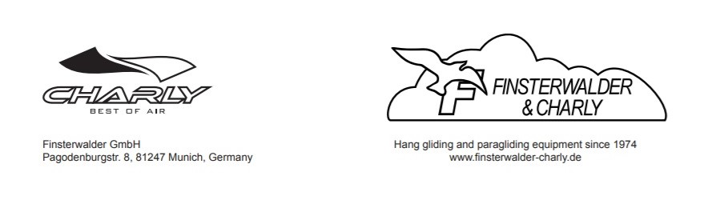
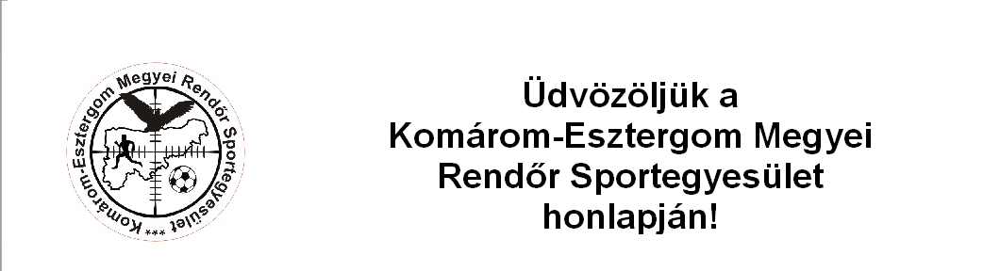
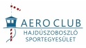

Minőségi változások a sikloernyosklub.hu starthelykereső felületén
A sikloernyosklub.hu starthelykereső további funkciókkal bővült
A magyarországi starthelyek fejlesztése nyomán immár szélirány szerint is kereshetünk starthelyre, illetve a starthely státusza (tiltott, tisztázatlan, engedélyezett) is szürhetünk.
Továbbra is könnyen megtalálható a googlés starthelykereső külső hivatkozása a honlapon. A starthelyek státusza változhat, ezeket a változásokat igyekszem lekövetni, de kisebb hibák előfordulhatnak.
Amit fontosnak tartok, hogy a biztosan letiltott helyek legyenek markánsan elkülöníthetők a más státuszú starthelyektől.
Amennyiben valakinek építő javaslata, képi- videó anyaga lenne a fejlesztéshez és korlátozás nélkül megosztaná velünk, forrásmegjelőléssel küldje el nekem legyen szíves a parapenteleonardo kukac gmailes elérhetőségre.
Bassanoban a Tappeti starthely ideiglenesen lezárásra kerül április 17-től
megközelítőleg három hét időtartamra. A többi közeli starthely továbbra is változatlanul üzemel.
A karbantartás alkalmával a starthely további, mintegy 40%-al kerül kibővítésre a tervek szerint. Az
átépítés során a lejtő felülete szöge is optimalizálásra kerül és a bővítés az átjáronál lévő padoknál
lehetővé fogja tenni, hogy a siklóernyőket kényelmesebben lehessen előkészíteni startra. Sajnos korábban
nem tudtak az üzemeltetők a munkálatoknak nekilátni bürokratikus nehézségek miatt. Írja a "Vivere Il
Grappa" szövetkezet
Tisztelt pilóta társaim,
Néhány szóban szeretnék megosztani veletek egy nagyon fontos dolgot, mely a világ minden pilótája előtt
egyformán elsődleges. Ez nem más mint a biztonságos repülés!
Hiszen bármennyire is tapasztaltak és ügyesek vagyunk, mégiscsak idegen közegben közlekedünk a
levegőben. A természet nem adott nekünk olyan testrészeket amelyekkel fent tudnánk maradni a levegőben.
Egyetlen fegyverünk az eszünk! Tehát a világon mindenhol a pilóták arra törekednek, hogy eszüket
használva minél többet tudjanak repülni. Ehhez pedig a biztonság szükségeltetik.
Tényezők, melyek befolyásolhatják a biztonsági faktort:
– a pilóta felkészültsége
– az időjárás
– környezet tulajdonságai (beleértve az adott hely domborzati tulajdonságait és széljárásait is)
– eszköz állapota és repülési tulajdonságai
– légtér telítettsége, koordináltsága
– pilóta tájékozódottsága
– helyzetfelismerési képessége
Nem véletlenül van az, hogy adatot gyűjtenek a repülő közösségek mindenről, ami a repülések alatt eltér
az előírt biztonságos tevékenységtől.
Mert ezeket az adatokat összesítve meg lehet előzni egy csomó balesetet! Nagyon fontos a prevenció! De
előrelátni csak akkor lehet, ha látjuk azt, hogy eddig mi történt. Ha nem ismerjük a múltat és a jelent
nem tudjuk megváltoztatni a jövőt!
Ezért találták ki azt a külön csoportot, aminek az a dolga, hogy adatokat gyűjt, elemez és megállapít
tényeket, azokat elküldi a gyártóknak, közösségeknek és így lehetőséget adnak arra, hogy a hibák
kijavítódjanak! Ez a repülésbiztonsági szolgálat. REBISZ.
Ez a szervezet nem rendőrség, nem azért van, hogy büntessen, felelősöket találjon egy-egy baleset
következtében. De Őket keresi meg a rendőrség, légügyi hatóság szakmai tanácsért.
A rebiszhez minden súlyosabb baleset eljut, mert a mentő hivatalból értesíti a rendőröket, azok pedig a
rebiszhez fordulnak tanácsért.
Előzzétek meg az eseményeket, ha van valami baleset, szóljatok Ti a HFFA ügyeletesnek, amilyen gyorsan
tudtok, hogy a felsorolt szervek kérdezősködéseire már olyan választ tudjon adni a REBISZ amely megvéd
Titeket! A sérülés nélküli balesetek bejelentése, pedig a statisztikát növeli, lehet, hogy saját
tapasztalatotok egy hellyel kapcsolatos, vagy egy repülőeszközzel kapcsolatos bejelentésetek megmenti a
jövőben valaki életét!
Vannak olyan magyar törvények melyek azt írják elő, hogy mindenki köteles bejelenteni az észlelt
balesetet, mert ha nem 1 millió Ft-ig bírságolható!
Én azért kérem, hogy az alábbi telefonszámon jelentsétek be ha láttok baleseteket, vagy Ti szenvedtek el
balesetet, hogy felzárkózzunk az Európai pilótákhoz és megmentsük mások életét, illetve segítsetek abban
a gyártóknak, hogy tökéletesíthessék eszközeiket!
Szőlő: +36 70 363 11 09 (Csöngess meg aztán tedd le és én visszahívlak, hogy még költséged se legyen!)
Köszönöm figyelmeteket és remélem ha úgy adódik hívtok!
Tisztelettel:
Szöllösi László
HFFA - Szabad Repülők Szövetsége
DHV Figyelem! Biztonsági felülvizsgálat mentőernyőkre
A DHV (Német Függőrepülő Szövetség) biztonsági felülvizsgálatot rendelt el minden mentőrendszerhez,
mivel néhány alkalommal dokumentáltan történtek súlyos, akár halálos kimenetelű balesetek mentőernyő
használata ellenére az elmúlt években. A DHV szigorú vizsgálatok során megállapította, hogy egynél több
esetben az egyébként kifogástalan állapotban lévő mentőernyő helytelen működését a következő tényezők
okozták:
A mentőernyő és a beülő inkompatibilitása a beülő belső vagy külső konténerével
A mentőernyő frontkonténerének helytelen felszerelése.
Nyitási folyamat meghiúsulása egyéb akadályoztatottság következtében.
A hatóság által kijelölt személyek kötelesek írásban dokumentálni az ellenőrzést és az esetleges
észrevételeket eljuttatni a DHV-hez.
Az ellenőrzés az alábbiakat kell hogy magában foglalja:
1. Meghatározni a használati utasításban található információk alapján, hogy a heveder és a mentőeszköz
alapvetően kompatibilisek-e. A mentőeszköz belső konténerrel ellátott beülőnél határozza meg, hogy a
kombinálandó mentőfelszerelést a beülő gyártója jóváhagyta-e? A telepítéshez birtokolja-e a szóban forgó
beülőhöz tartozó belső konténert.
2. A belső konténeres mentőeszköz beszerelése a beülő külső konténerébe vagy külső külső konténerbe a
használati utasítás szerinti.
3. Kioldási teszt a heveder és a mentőeszköz leendő felhasználója által. Az aktiválási próbát
hevederfelfüggesztésben (szimulátorban) kell végrehajtani a hevederben, repülési helyzetben. A belső
konténert teljesen ki kell szabadítani a beülőből és ki kell dobni. Az aktiválási teszt során meg kell
állapítani, hogy
a) az aktiváló fogantyú könnyen elérhető és könnyen megfogható,
b) a belső konténer kihúzható és eldobható-e a beülő tárolójából vagy a külső mentőernyőkonténerből a
mentőszerkezet kihúzási irányában. A pilóta ezt könnyen és kis erőfeszítéssel tudja megtenni.
c) a kioldó fogantyú, a zsinór és a belső konténer konfigurációja lehetővé teszi a belső konténer egy
menetben történő erőteljes kidobását.
d) A kioldó fogantyú típusa és a belső konténerrel való kapcsolat hossza végett nem áll fenn annak a
veszélye, hogy a mentőeszköz kioldódjon a belső konténerből, például lelógjon vagy belegabalyodjon a
tartalék ejtőernyő vezetékeibe.
Figyelem! Biztonsági visszahívás CHARLY mentőernyőkre

Biztonsági közlemény minden Charly mentőszerkezethez
A mentőernyőkonténer kioldófogantyú felfüggesztésének felülvizsgálata.
Adott esetben felmerülhet a veszélye, hogy a mentőernyő kioldó fogantyú, különösen az integrált rekesszel
rendelkező hevedereknél, kioldás után beszorulhat a felfüggesztő hevederekbe úgy, hogy a mentőeszköz
nyílása elakad. Ezért a CHARLY kioldó fogantyújának maximális hosszát a mentőeszköz belső konténeréhez 37
cm-re korlátozza. A hossz mérésének módja a képen látható.
A kioldó fogantyú és a belső konténer közötti kapcsolat hosszát a következő repülés előtt a
tulajdonosoknak ellenőrizniük kell.
Ha szükséges a mentőfogantyú-konténer kapcsolat lerövidítése, azt szakképzett személyzetnek (a
hevedergyártónak vagy az általa megbízott cégeknek) kell elvégeznie, végül kompatibilitási teszttel
ellenőrizni kell a működőképességet.
Ha kétségei vannak, az érintetteknek fel kell venniük a kapcsolatot a heveder gyártójával a megfelelő
hosszúságú fogantyú beszerzése érdekében. Finsterwalder GmbH, HRB 52509 Munich Local Court, General Manager: Dipl.-Ing. Thomas Phone: +49 89
8116528, office@finsterwalder-charly.de
#Charly #mentőernyő #visszahívás #veszély
Szomorúan tudatjuk, hogy barátunk, sporttársunk, Varga Norbert a KEMRSE vezető pilótája 2021.10.29-én
elhunyt.

2021.10.29-én délután Norbi barátunk futás közben rosszul lett és elhunyt. Halálával elvesztettünk egy
olyan embert, aki a magyar siklóernyőzésben, a tandem repülésben mérföldkőnek számított. Elvesztettünk egy
barátot, egy olyan sporttársat és vezetőt, akire mindig lehetett számítani. Elvesztettünk egy jó embert.
Nyugodj békében!
"A szabadság szerelmesei" Siklóernyőzés Hajdúszoboszlón.

Siklóernyős témájú videót tett közzé a Hajdúszoboszló Televízió. Riportjában az Aero Club Hajdúszoboszló tagjait szólaltatta meg a
Magyar Köztársaság Kupa előkelő 2. helyezésének kapcsán. A riportból megtudhatjuk, hogy hol tart a
hajdúszoboszlói siklóernyőzés és egy kis kedvcsináló is egyben azoknak, akik szeretnének közelebbről
megismerkedni a siklóernyőzéssel.